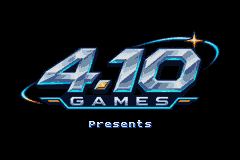
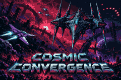
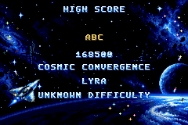

Boot and HOME
The publisher splash appears once at startup; HOME is the return point for Gallery, Options and Play.


GINGA KORO · PLAYER EXPERIENCE
A short visual guide to the screens that take a player from boot, through a run, and back to the results.
The publisher splash appears once at startup; HOME is the return point for Gallery, Options and Play.

Campaign artwork identifies each run before the five-stage flight begins.

PLAYGROUND has a stage picker; Select Ship pairs the chosen craft with its captain.


The HUD keeps lives, bombs, health, score and stage or boss status visible while the action stays in the centre.


A stage-clear summary leads into the next stage. At campaign end, the selected ship and captain appear before high-score entry and credits.

